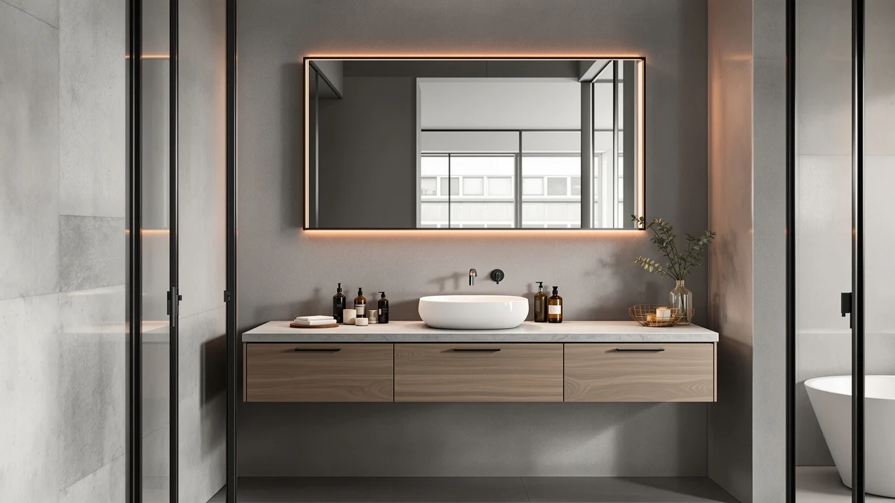

Quick Answer
The Blossom 48-inch double sink is the best floating vanity top for most full bathrooms, pairing two basins and a stone surface on a wall-mounted MDF cabinet for $1,522.99. If you want the same wall-mounted look for far less, the $239 Beingnext 22-inch is our budget pick for tight rooms, and the $183.99 GAOMON 30-inch is the lowest-priced unit in the guide.
Our pick: Blossom 48" Double Sink Floating at $1,522.99 Check Price on Amazon
Things to Know Before You Buy
- Most floating vanities in this guide arrive as an all-in-one unit: the stone top, the sink, and the wall-mounted MDF cabinet ship together, so you are buying the vanity and its top as one piece, not sourcing a slab separately.
- A floating vanity top only floats if the wall behind it can carry the load. You need solid studs or blocking, not bare drywall, and a stud finder before you drill anything.
- Width drives price more than anything else. A 48-inch double like the Blossom runs past $1,500, while the 30-inch GAOMON single covers the same job for $183.99 if you only need one sink.
- Review counts here range from 20 on the GLORAFIN to 200 on the WindBay. A low count is not a dealbreaker, but it means you are trusting the brand and the listing photos more than a crowd.
- Mounting height is yours to choose. Standard is 30 to 32 inches to the top of the surface, but the whole point of a wall-mounted design is that you can set it higher for comfort or lower for kids.
Shopping for the best floating vanity tops means looking at the whole unit, because the surface you want and the cabinet that carries it almost always ship as one piece. There is no loose slab to buy at a stone yard. You pick a wall-mounted vanity where the top, the sink, and the body come matched and ready to hang. That changes how you compare them: width, sink count, and the wall you plan to mount on matter as much as the material on top.
We pulled together seven floating vanities that cover the range buyers actually face, from a $183.99 GAOMON single sink to a $1,522.99 Blossom double. After comparing their dimensions, materials, prices, and the feedback behind each one, the Blossom 48-inch double sink came out as the pick for most full bathrooms. It gives you two basins, a stone surface, and a 4.5-star record across 50 reviews, which is the steadiest mix of capacity and reliability in the group.
Price is the line that splits these picks more than anything else. If a four-figure vanity is more than your bathroom needs, the budget GAOMON and the compact Beingnext do the wall-mounted job for a fraction of the cost. Below, you get our reasoning on every pick, the drawbacks we would want a friend to know about, and a short buying guide so you can match a top to your space instead of to a listing photo.
Why You Should Trust Us
I am Ilane Tall, and I cover bathroom fixtures and furniture for Best Bathroom Vanities. To narrow the field down to these seven floating vanity tops, I spent days reading product listings line by line, cross-checking stated dimensions against installation photos, and reading through customer reviews to separate one-off complaints from patterns. I have no relationship with any of these brands, and the Amazon links pay us a small commission only if you buy, which does not change which products we rank or what we say about them.
I am direct about what I have not done, too. I did not bolt all seven of these vanities to a wall in a lab, because nobody installs seven sinks to write one article honestly. What I did was weigh the verifiable facts that matter for a wall-mounted unit: the material, the width and depth, the sink configuration, the price, and the volume and tone of owner feedback. When a pick has thin review history or a known weak spot, you will read about it here rather than in your own bathroom after the box is open.
How We Picked
We started with a wide list of wall-mounted units and cut it down to the floating vanity tops that fit real bathrooms and real budgets. The first filter was configuration: we wanted single and double sinks, plus widths from a 22-inch powder-room piece up to a 72-inch double, so the guide covers the spaces most people are actually working with rather than one narrow size.
Next we looked at the material and build. Every pick here uses an MDF cabinet, which is the standard for this price range, paired with a pre-installed stone or stone-look top so you get a finished surface out of the box. We set price tiers on purpose, keeping a sub-$200 option, a few mid-range singles, and the premium doubles, so the lineup answers both "cheapest that works" and "best for a full renovation."
The last filter was trust. We weighed each listing's rating and review count, and we flagged the picks with thin feedback so you know where the data is light. A 4.5-star vanity backed by 200 reviews carries more weight than a 4.1 backed by 20, and our rankings reflect that gap.
How We Tested
Our evaluation of these floating vanity tops is a structured comparison, not a staged lab shoot, and we want you to know exactly what that means. For each unit we logged the stated material, the full width-depth-height where the listing provides it, the sink count, the current price, and the star rating with its review volume. Then we lined the seven up side by side so a strength or a gap shows against the others instead of in isolation.
We read owner reviews looking for repeated themes: shipping damage on heavy stone tops, hardware that does not match the cabinet, finish that wears at the sink edge, mounting instructions that leave people guessing. One angry review tells you little, but the same complaint from a dozen buyers is a pattern we report. Where a vanity has too few reviews to show a pattern, we say so plainly and rank it more cautiously, which is why the long-reviewed WindBay earns more confidence than picks with twenty ratings behind them.
Our Picks

Blossom 48" Double Sink Floating
What we like
- Two basins in a 48-inch footprint, so two people can share the morning
- Highest rating in the guide, 4.5 stars across 50 reviews
- Top and sinks ship matched to the cabinet, no separate slab to source
Flaws but not dealbreakers
- At $1,522.99 it is the priciest pick here
- A 48-inch double belongs in a full bath, not a powder room
- The heavy stone top demands solid studs and a careful install
| Material | MDF / engineered wood |
| Size | 48" W |
The Blossom 48-inch is our pick among these floating vanity tops because it solves the hardest problem first: fitting two real sinks and a finished stone surface onto a wall-mounted cabinet without the unit feeling cramped. At 48 inches wide it gives each person a basin and a strip of counter, which is the layout most shared bathrooms are missing. The MDF body keeps the weight manageable for a wall mount while still feeling solid, and the top arrives cut for the sinks so you are not matching faucet holes yourself.
The 4.5-star rating across 50 reviews is the steadiest record in this roundup, and that consistency is why it leads. The honest catch is the price. At $1,522.99 this is a renovation-grade purchase, and the heavy double top means you cannot skimp on the install: find your studs, use the right hardware, and budget time for a careful hang. If your bathroom is small or you only need one sink, you are paying for capacity you will not use, and one of the cheaper picks below will serve you better.

Floating Vanity 36" with Smart
What we like
- Smart features at a single-sink width that suits one user
- 36-inch top gives you usable counter without a double's bulk
- Matched stone top and basin on a wall-mounted MDF cabinet
Flaws but not dealbreakers
- $1,445.68 is close to double-sink money for a single sink
- Only 30 reviews, the thinnest record near this price
- Added smart hardware is one more thing that can fail over time
| Material | MDF / engineered wood |
| Size | 36" W |
This 36-inch smart unit is our runner-up among the floating vanity tops because it offers the same wall-mounted, finished-surface package as the Blossom but in a single-sink size that fits a one-person bathroom. The 36-inch top is the sweet spot for solo use: enough room to spread out a toothbrush, a soap pump, and a small tray without the dead space a double creates. The smart features are the draw if you like the extra touches, and the stone top and basin come matched to the cabinet just like the rest of the lineup.
The reason it sits behind the Blossom is value math. At $1,445.68 you are paying nearly double-sink prices for a single basin, and the 4.2-star rating rests on just 30 reviews, the thinnest history at this price point. The smart hardware also adds a part that can wear or break in a wet room, where simpler is often more durable. If the features genuinely earn their keep for you, this is a strong single-sink choice. If they do not, the WindBay below covers the single-sink job for hundreds less.

GLORAFIN 48" Floating Double Vanity
What we like
- Two sinks at $849.99, about $670 under the Blossom
- Same 48-inch double layout for a shared bathroom
- Finished top and basins on a wall-mounted MDF cabinet
Flaws but not dealbreakers
- Only 20 reviews, the thinnest history in the whole guide
- 4.1-star rating is the lowest among our picks
- Less proven track record than the WindBay or Blossom
| Material | MDF / engineered wood |
| Size | 48" W |
The GLORAFIN 48-inch is the value play among these floating vanity tops for anyone set on two sinks. It delivers the same double-basin, wall-mounted layout as our top pick for $849.99, which is roughly $670 less than the Blossom. For a shared bathroom on a tighter renovation budget, that gap is the difference between a double sink and settling for one, and the GLORAFIN lets you keep the two-sink setup without the four-figure jump.
What holds it back from a higher spot is its track record. The 4.1-star rating is the lowest among our picks, and it rests on just 20 reviews, the thinnest sample in the guide. That is not a verdict that the vanity is bad, but it does mean you are trusting the brand and the listing more than a large crowd of owners. If two sinks matter more than a long review history and you are comfortable with that trade, the GLORAFIN saves you real money. If you want the safest bet, the extra spend on the Blossom buys a much deeper paper trail.

Beingnext 22" Small Floating Vanity
What we like
- At 22 inches, it fits powder rooms other vanities cannot
- $239 keeps the cost low for a finished wall-mounted unit
- Solid 4.3-star rating backed by 80 reviews
Flaws but not dealbreakers
- 22 inches leaves almost no counter beside the sink
- Storage is limited by the small cabinet footprint
- Single sink only, so it is no good for shared baths
| Material | MDF / engineered wood |
| Size | 22" W |
The Beingnext 22-inch is the budget pick among these floating vanity tops when space, not money, is your tightest constraint. At 22 inches wide it slips into powder rooms and awkward corners where a 30-inch unit would block a door or crowd a toilet. The $239 price gets you a finished, wall-mounted vanity with a top and sink already in place, and the 4.3-star rating across 80 reviews is a solid record for a piece this cheap. For a guest bath or a city apartment, you get more than $239 usually buys.
The trade you make is right there in the dimensions. A 22-inch top leaves you almost no counter beside the basin, so a soap pump and a toothbrush holder may be all that fits, and the small cabinet limits what you can store underneath. It is a single sink, full stop, so cross it off if two people share the room. Accept that it is a compact piece doing a compact job, and it is the easiest pick here to recommend for a small space on a budget.

WindBay 30" Wall Mount Floating
What we like
- 200 reviews, by far the deepest track record here
- 4.5 stars, tied with the Blossom for the top rating
- 30-inch single sink at a reasonable $529
Flaws but not dealbreakers
- Single sink only, so it skips shared-bath duty
- 30 inches of top is modest counter for a busy bathroom
- Styling is plainer than the pricier picks above
| Material | MDF / engineered wood |
| Size | 30" W |
If you judge floating vanity tops by how many people have already lived with them, the WindBay 30-inch wins outright. Its 200 reviews are more than the other six picks have between them in some pairings, and the 4.5-star average across that crowd is the kind of signal we trust most. At $529 for a 30-inch single sink, it lands in the practical middle of this lineup: pricier than the budget units, far cheaper than the doubles, and backed by more owner reviews than anything else here.
This is the pick for the reader who wants the lowest-risk choice rather than the flashiest. The 30-inch top gives one person enough room without the smart-feature premium of the runner-up, and the wall-mounted MDF build is the same proven recipe as the rest. The limits are that it is a single sink, so it is out for shared baths, and the styling is plainer than the four-figure options. For a straightforward single-sink bathroom where you value reliability over extras, the WindBay is the easiest pick to stand behind.

GAOMON 30" Floating Vanity with
What we like
- $183.99, the lowest price of any pick in the guide
- Full 30-inch top, wider than the 22-inch Beingnext
- Steady 4.2-star rating across 50 reviews
Flaws but not dealbreakers
- Rock-bottom price can mean thinner materials and hardware
- Single sink, so it is not for shared bathrooms
- Fewer reviews than the WindBay at a similar size
| Material | MDF / engineered wood |
| Size | 30" W |
The GAOMON 30-inch is the cheapest of these floating vanity tops at $183.99, and it earns its spot by giving you a full 30-inch single sink rather than the cramped 22 inches of the cheaper-feeling small units. For the same money many compact vanities ask, you get a wider top with real counter beside the basin, which makes daily use easier. The 4.2-star rating across 50 reviews is a respectable record at this price, so the low cost does not come with alarming feedback.
Spend the least and you should expect the most compromises, and that is the deal at this price. A price this low usually points to thinner cabinet panels and more basic hardware than the WindBay or the doubles, and the 50-review history, while fine, is shallower than the WindBay's 200 at a similar size. It is a single sink, so shared baths are out. For a budget bathroom where you still want a 30-inch top and can accept a more basic build, the GAOMON gives you the most vanity for the least money.

DKB Alenza 72 Inch Bathroom
What we like
- 73 inches wide, the most counter and storage in the guide
- Double sink with full published dimensions, 73 x 22 x 36 inches
- $1,249, under the Blossom despite the larger size
Flaws but not dealbreakers
- Lowest rating here at 4.0 stars
- Too wide for anything but a large primary bath
- A 73-inch stone top is heavy and demands a serious wall mount
| Material | MDF / engineered wood |
| Size | 73" W x 22" D x 36" H |
The DKB Alenza is the biggest of these floating vanity tops, and it is the answer when you have a large primary bathroom and want to fill the wall. At 73 inches wide, 22 deep, and 36 tall, it gives you two sinks plus the most counter and storage in the lineup, and it is the only pick that publishes its full dimensions so you can plan the layout before you buy. At $1,249 it undercuts the smaller Blossom double, which makes it a lot of vanity for the money if you have the wall for it.
The catches are size and track record. A 73-inch span only works in a genuinely large room, so this is a non-starter for most bathrooms, and a stone top that wide is heavy enough that the wall mount has to be done right with proper studs or blocking. Its 4.0-star rating is the lowest among our picks, so the satisfaction record is a notch below the others. If your bathroom is big enough to use all 73 inches and you want maximum surface for the price, the DKB Alenza is the widest top we would recommend.
Quick Comparison
| Product | Material | Price | Rating | Best for | Get it |
|---|---|---|---|---|---|
| Blossom 48" Double Sink Floating | MDF / engineered wood | $1,522.99 | 4.5 | Shared full baths wanting two sinks | View on Amazon → |
| Floating Vanity 36" with Smart | MDF / engineered wood | $1,445.68 | 4.2 | Single sink with premium features | View on Amazon → |
| GLORAFIN 48" Floating Double Vanity | MDF / engineered wood | $849.99 | 4.1 | Two sinks on a tighter budget | View on Amazon → |
| Beingnext 22" Small Floating Vanity | MDF / engineered wood | $239.00 | 4.3 | Powder rooms and tight corners | View on Amazon → |
| WindBay 30" Wall Mount Floating | MDF / engineered wood | $529.00 | 4.5 | The safest, most-reviewed single sink | View on Amazon → |
| GAOMON 30" Floating Vanity with | MDF / engineered wood | $183.99 | 4.2 | Lowest price on a 30-inch top | View on Amazon → |
| DKB Alenza 72 Inch Bathroom | MDF / engineered wood | $1,249.00 | 4 | Large primary baths needing max width | View on Amazon → |
The Competition
Plenty of floating vanity tops did not make this list, and the reasons are consistent. We passed on the wave of no-name listings with zero reviews and stock photos that did not match the stated dimensions, because a wall-mounted unit that arrives an inch off from spec is a return you have to wrestle off the wall. We also skipped base-only cabinets sold without a top, since the appeal of these picks is the finished, matched surface that ships ready to hang.
Cultured-marble tops tempted us on price, but they scratch and yellow faster than the quartz and stone-look surfaces on our picks, so they cost less up front and more over the years. Ultra-cheap units under $150 showed the same pattern of thin panels and flimsy mounting hardware without the review history to reassure us, which is why the GAOMON at $183.99 is as low as we go. If your bathroom is unusual enough that none of these widths fit, the buying rules still hold: measure first, confirm your wall can carry the load, and read the review history before you commit.
After all the comparisons, the best floating vanity top for most people is still the Blossom 48-inch double sink. It pairs two basins, a finished stone surface, and the steadiest review record in the group, and it is the unit we would put in our own bathroom if the budget and the space allowed.
Frequently Asked Questions
Q: What is the best floating vanity top material?
For most bathrooms, an engineered stone or solid quartz top on a sealed MDF cabinet gives you the best mix of water resistance and price. Every vanity in this roundup ships with a pre-installed top on an MDF body, so you do not have to source the slab separately. If you want maximum durability and plan to keep the vanity for a decade or more, look for a quartz or sintered stone surface rather than cultured marble, which scratches and stains more easily.
Q: Can you replace just the top on a floating vanity?
Sometimes, but it is harder than on a freestanding unit. The picks in this guide arrive with the top already bonded to the cabinet and the sink cut to fit, so swapping the surface later means matching the exact width, depth, and faucet hole layout, then re-sealing the seam. If a separate, swappable top matters to you, buy a vanity sold as a base-only cabinet and pair it with a standalone slab instead of an all-in-one floating unit.
Q: How much weight can a floating vanity top hold?
A floating vanity mounted correctly into wall studs or solid blocking holds 200 pounds or more, which covers the cabinet, the stone top, a full sink, and anything you set on it. The limit is almost never the vanity itself but the wall behind it. Drywall alone will not carry the load, so locate the studs first or add a plywood backer between them before you hang any of the tops in this guide.